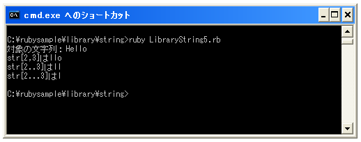

- Home ›
- Ruby入門 ›
- 文字列(String)クラス
文字列の一部を取得する
文字列の中の部分文字列を取得する方法を確認します。
指定の位置から指定の長さの文字列を取得する
指定した開始位置から指定した長さの文字列を新しい文字列として取得します。
文字列[nth, len]
1番目の引数に取得する文字の開始位置を指定します。単位はバイトで先頭が0番目となります。2番目の引数で取得する文字の長さを指定します。単位はバイトです。文字の長さが文字列のバイト数よりも多い場合は文字列の末尾までの文字を取得しますが、開始位置が文字列のバイト数よりも大きい場合は「nil」を取得します。
具体的には次のように記述します。
str = "Hello" newStr = str[1, 2]
上記の場合には「el」という新しい文字列を取得します。
指定の開始位置と終了位置の文字列を取得する
開始位置と終了位置を指定して文字列を取得します。
文字列[first..last]
1番目の引数に取得する文字の開始位置を指定します。単位はバイトで先頭が0番目となります。2番目の引数では取得する文字の終了位置を指定します。単位はバイトです。終了位置が文字列のバイト数よりも多い場合は文字列の末尾までの文字を取得しますが、開始位置が0より小さいか文字列のバイト数よりも大きくさらに 「first > last + 1」 の場合は「nil」を取得します。
具体的には次のように記述します。
str = "Hello" newStr = str[2..3]
上記の場合には「ll」という新しい文字列を取得します。
別の方法で指定の開始位置と終了位置の文字列を取得する
開始位置と終了位置を指定して文字列を取得しますが指定の方法が異なります。
文字列[first...last]
1番目の引数に取得する文字の開始位置を指定します。1番目の文字の左側の位置が「0」、1番目の文字と2番目の文字の間の位置が「1」となります。2番目の引数では取得する文字の終了位置を指定します。位置の指定方法は1番目と同じです。この構文では1番目と2番目の引数で指定した位置に挟まれた文字を取得し新しい文字列として返します。
終了位置が文字列のバイト数よりも多い場合は文字列の末尾までの文字を取得しますが、開始位置が0より小さいか文字列のバイト数よりも大きくさらに 「first > last」 の場合は「nil」を取得します。
具体的には次のように記述します。
str = "Hello" newStr = str[2...3]
上記の場合には「l」という新しい文字列を取得します。
サンプルプログラム
では簡単なサンプルで試してみます。
#! ruby -Ks
str = "Hello"
print("対象の文字列：", str, "¥n")
print("str[2,3]は", str[2,3], "¥n")
print("str[2..3]は", str[2..3], "¥n")
print("str[2...3]は", str[2...3], "¥n")
実行結果は次のようになります。

( Written by Tatsuo Ikura )

著者 / TATSUO IKURA
初心者～中級者の方を対象としたプログラミング方法や開発環境の構築の解説を行うサイトの運営を行っています。